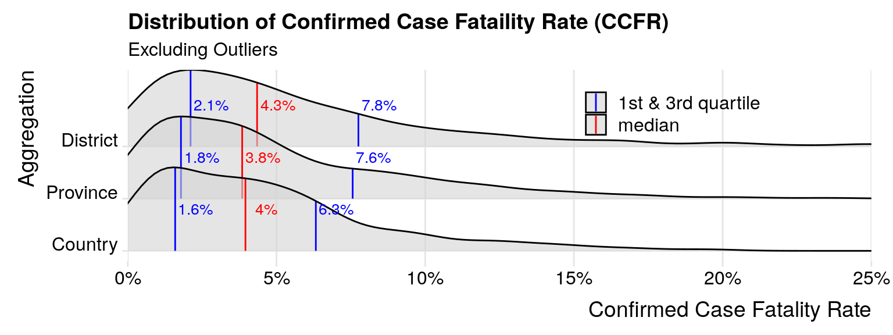

Chapter 4 Parameters and Inferences
In this chapter I will introduce parameters we wish to infer about COVID-19 spread and a modeling approach that can recover them from the observable introduced in the last chapter. I will add components to the model one piece at a time so that their function and impact on inference are clear.
4.1 Confirmed Case Fatality Rate (CCFR)
One parameter we can estimate directly from the data is the ratio of reported COVID-19 fatalities to the reported COVID-19 cases in an area. This should not be confused with the Case Fatality Rate (CFR) or the Infection Fatality Rate (IFR) which I discuss later.
\(Confirmed Case Fataility Rate = \frac{ConfirmedCovid19Fatailities}{ConfirmedCovid19Cases}\)
\(CFR=0.07 = \frac{}{}\)
